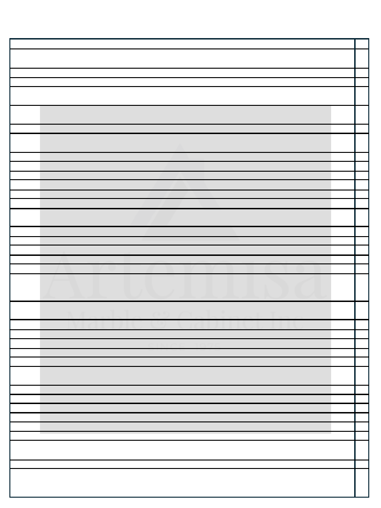

SOP JEFE DE CARPINTERIA
7:00 Team Prender luces
7:00 Jefe de carpinterita, Indicar quien empieza a trabajar y quien va a organizar (dependiendo del trabajo en
curso) o quien asiste a instaladores a cargar.
7:00 Operador de edgebander debe Soplar edgebander .
7:00 Team Prender máquinas para que se calienten .
7:00 Jefe, team, instaladores y ayudantes de instalación Recepcionar, Mover, organizar, asignar y ubicar materiales
y punch outs, cosas que hayan llegado del día anterior.
7:00 Doble Chequear. Instaladores cantidad de piezas por instalación Fillers, panels, handles, toe kicks y necesarios
para la instalación
7:00 Jefe Dirigir tráfico de carga según necesidades
7:15 Conducir reunión diaria de carpintería jefe Indicar cuáles son las prioridades para los miembros del equipo
team carpintería y team instalación
7:20 Jefe Organizar con el personal el área de salida de camiones
7:20Jefe Asignar punch outs (tenerlos listo para entrega next day)
7:20 Jefe de carpinteria Supervisar y asistir en la entrega de instalaciones,
7:20 Jefe de carpinteria Chequear por piezas que se hayan podido quedar de las instalaciones en camino
7:30Jefe, Team Organizar área de instalaciones (stock next day)
7:30 Resumir trabajo de producción (team)
7:30 Jefe Determinar si cada miembro del equipo tiene suficiente contenido de trabajo para la mañana si no indicar
que más va a hacer para completar.
7:30 Jefe Asignar tareas del día y verificar cumplimiento (jefe)
10:00 Jefe asignar donde situar instalación del próximo día
10:00 Supervisar dirigir y priorizar producción para próximo día de instalaciones ( jefe confirmar con ventas)
10:00 Jefe con ingeniería Recoger trabajo nuevo
10:00 Jefe y ventas confirmar que al finalizar va a instalarse un día después de terminada la producción.
10:00 Chequear órdenes pendientes por recibir ( jefe, controlador y contabilidad) necesarias para completar
trabajos en producción, órdenes de materiales pendientes, equipos, estatus de trabajos ordenados afuera (
pintura, por ejemplo)
10:00 Jefe Confirmar con accounting y control recibo de handles, accesorios y equipos especiales para el próximo
día instalaciones.
11:00 Jefe Reportar órdenes para trabajos próximos y para inventario
11:00 Jefe Supervisar tareas asignadas en la mañana
11:00 Jefe Chequear calidad del trabajo y confirmar efectividad.
12:00 Lunch
12:30 team Reanudar producción
12:30 Jefe Ayudar y empujar área necesaria para próximo día instalación, mover personal si es necesario hacia
tareas prioritarias
3:30 Jefe team terminar, organizar y chequear calidad y terminación
4:00 Jefe Acomodar y aignar trabajo para próximo día.
4:55 Jefe Supervisar limpieza y organización
4:55 Jefe Verificar que los procesos se estén haciendo de acuerdo al proceso establecido.
Durante todo el día jefe supervisar organización y seguridad en las areas de trabajo.
Tarea final, Jefe debe chequear de culminación de fabricación para la instalación del próximo día
10 minutos antes de finalizar la jornada asignar a un miembro del equipo para recoger limpiar y ordenar el área.
5:00 Team Apagar maquinaria
Next day